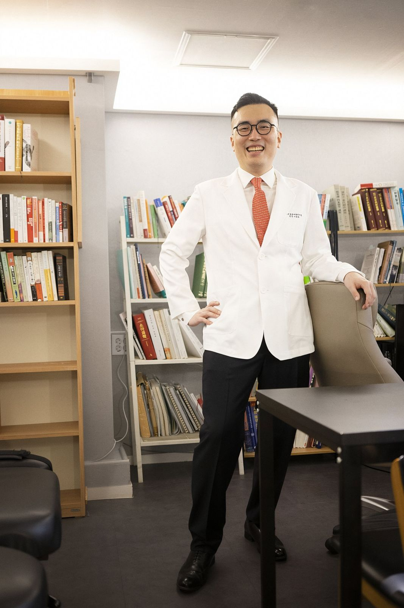
이종호 대표원장
전문 분야: 뇌기능 재활 · 당뇨·대사증후군 · 다이어트
- 원광대학교 한의과대학 졸업, 2013년 상도동 개원
- 중국 중의학대학 해부학·침도학 연수
- 동작구 어르신 치매예방, 찾아가는 실버한방케어, 한의약 난임치료 지원사업 지정 한의사
- 은로초등학교·중대부중학교 학교 한의사
- 방송 고정패널: MBN 「건강한의사」(2021), 「한방이 답이다」(2022), EBC 「여의보감」(2023)

오늘도 애쓰셨습니다. 잠과 식욕, 두 가지 리듬을 먼저 봅니다.
이어서 살핍니다
“지난번에 무엇이 가장 불편하셨는지, 오늘은 얼마나 편해지셨는지 이어서 묻겠습니다.”
매일 자정(한국 시간)에 바뀝니다. 한방가이드에도 매일 새 글이 올라옵니다.
잠깐 쉬어 가도 괜찮습니다
AI로 만든 이미지이 화면을 보는 동안만이라도 쉬어 가셔도 됩니다. 아무것도 하지 않으셔도 괜찮습니다.
4초 들이쉬고, 6초 내쉬어 보세요
긴장을 푸는 데 도움이 될 수 있는 일반적인 방법이며 치료를 대신하지 않습니다. 어지럽거나 불편하면 멈추세요.
누른 내용은 저장하거나 전송하지 않습니다.
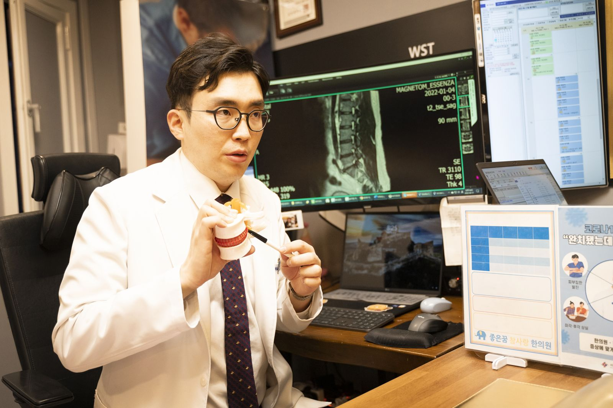
잠과 식욕, 두 가지 리듬을 먼저 봅니다
사람의 가장 기본적인 두 욕구인 수면욕과 식욕이 흔들리면 몸의 리듬이 함께 흔들립니다. 좋은꿈참사랑한의원 노량진점은 이 두 가지를 가장 먼저 살핍니다.
잠이 부족하면 식욕이 커지는 경향이 있는 것으로 알려져 있어, 두 문제는 함께 오는 경우가 많습니다.
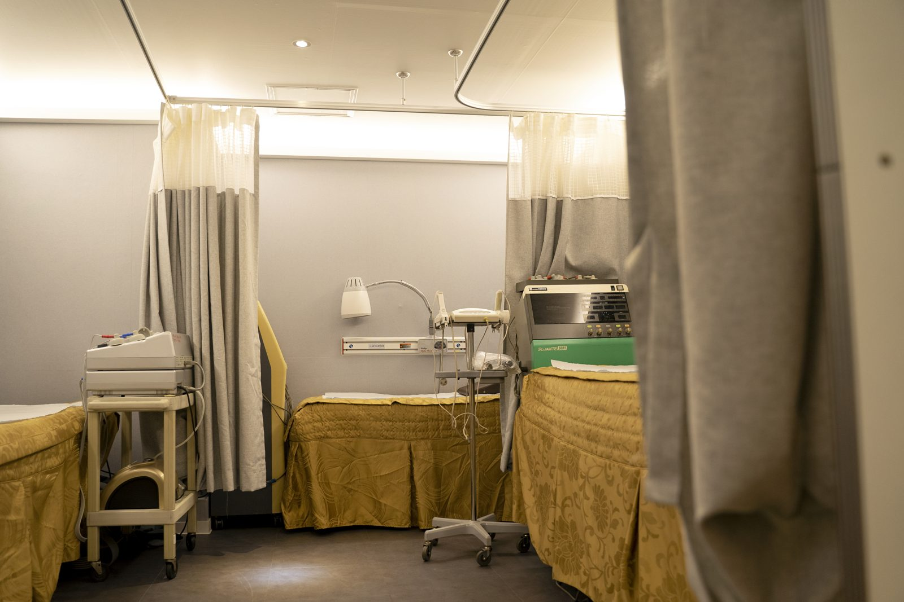
이야기를 끝까지 듣는 진료실

안녕하세요. 좋은꿈참사랑 한의원 노량진점 이종호 대표원장입니다.
한의학은 몸의 구조와 기능이 틀어진 부분을 살펴 치료하는 학문입니다. 이 안에는 신체와 정신의 균형을 조율하고 통합하는 관점이 있습니다.
심신의 연결은 감정을 통해 이루어집니다. 좋은꿈은 심신의 통합적인 치료와 감정의 안정을 오랫동안 연구해 왔습니다. 노량진점에서는 척추와 관절의 틀어짐을 살피는 추나와, 스트레스를 줄이고 마음을 안정시키는 상담을 꾸준히 해 왔습니다.
다양한 스트레스 요인을 이해하는 상담, 틀어진 구조를 살피는 추나, 근육의 긴장을 살피는 침구치료, 몸의 기능과 균형을 살피는 한약 상담을 통해 원인을 함께 찾고 건강한 몸과 마음을 유지할 수 있도록 돕겠습니다.
이야기가 있는 곳, 사람의 회복 과정을 함께하는 곳이 되겠습니다. 가족을 대하는 마음과 믿음으로 한 분, 한 분 진료하겠습니다.
좋은꿈참사랑 한의원 노량진점 대표원장 이종호
좋은꿈참사랑한의원 노량진점은 좋은꿈 네트워크의 한의원입니다. 다양한 원인과 증상을 복합적으로 살펴, 한 분 한 분에게 가장 맞는 치료법을 찾습니다.
회복은 한 번에 오지 않고, 이어서 들을 때 시작됩니다.

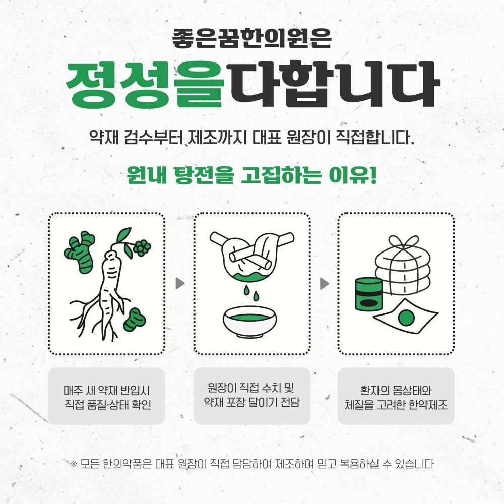


원장님이 실제 조제 때 찍은 사진입니다(2026년 7~11월). 환자분 정보가 적힌 이름표는 잘라 냈습니다. 원내 탕전 기록 더 보기 →


지점마다 운영 중인 클리닉이 다릅니다. 필요한 진료는 방문 전 전화로 문의해 주세요.


전문 분야: 뇌기능 재활 · 당뇨·대사증후군 · 다이어트
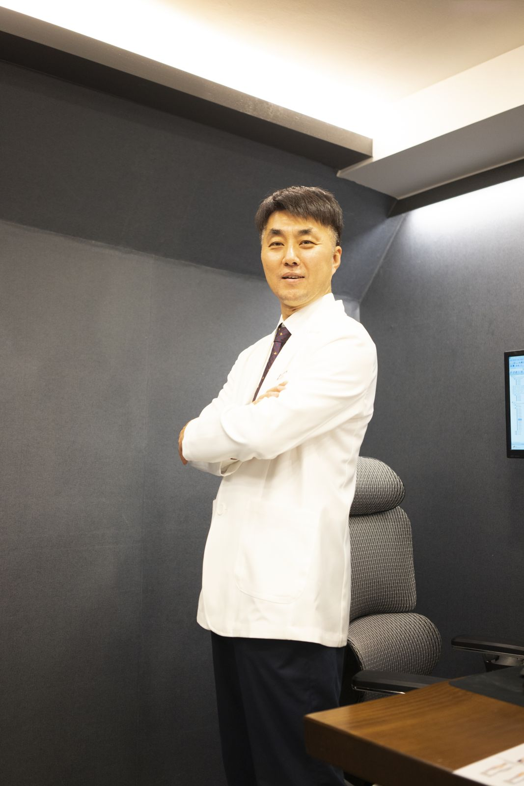
전문 분야: 추나요법 · 통증재활

노량진점 진료원장으로 진료합니다.
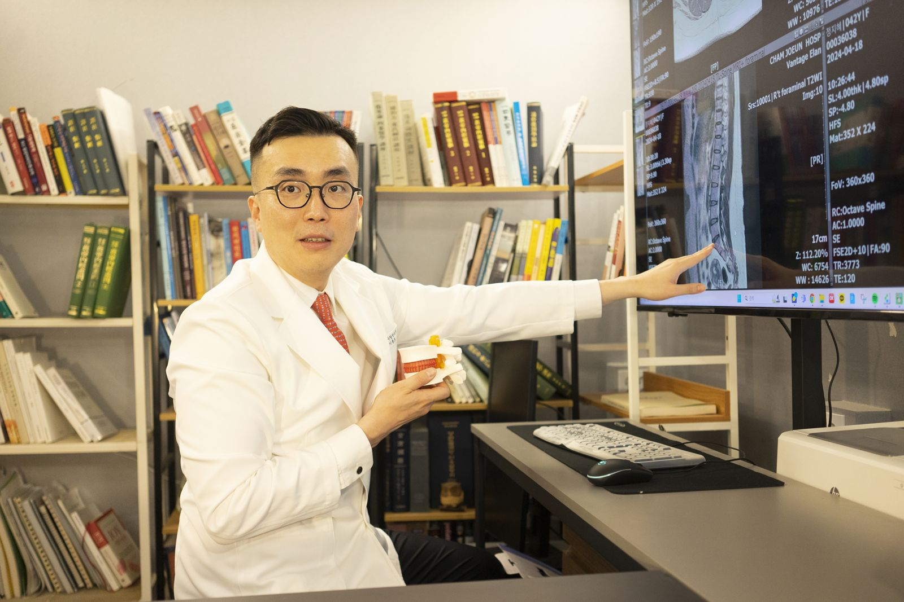


처음 오시는 날도 편안하게

오시면 이런 순서로 진행됩니다.
“무릎이 아프다”에서 한 걸음 더 들어갑니다.
“계단을 오를 때와 내려갈 때 중 언제 더 불편한가요?”
몸은 따뜻한지, 소화는 편한지, 잠은 잘 자는지, 대소변은 어떤지 — 통증과 함께 평소 생활을 살핍니다.
아픈 곳 하나만이 아니라 몸 전체의 리듬을 함께 봅니다.
모든 분이 같은 검사를 받지는 않습니다. 말씀해 주신 증상에 따라 필요한 것만 합니다.

수치와 말씀을 함께 봅니다
“요즘 몸이 무거워요”라는 말씀을 들으면, 그 말을 먼저 충분히 듣고 필요할 때 숫자로도 함께 확인합니다. 장비는 상담을 대신하지 않고, 말씀하신 불편을 더 정확히 이해하기 위해 씁니다.
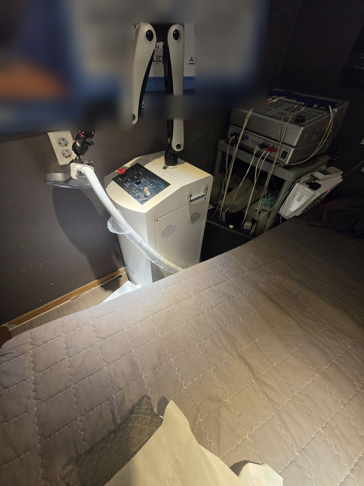
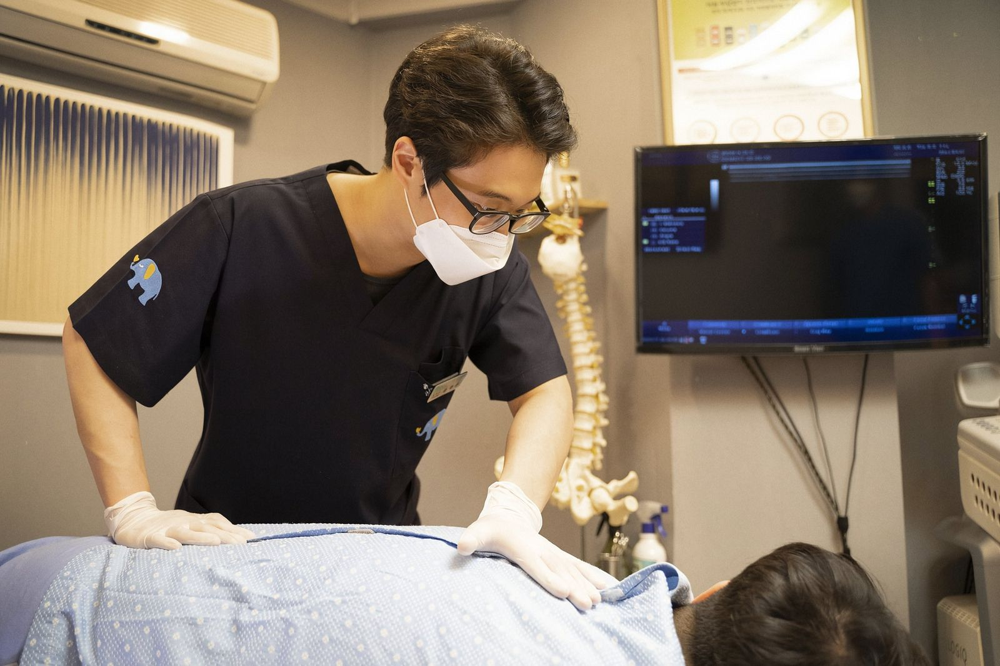
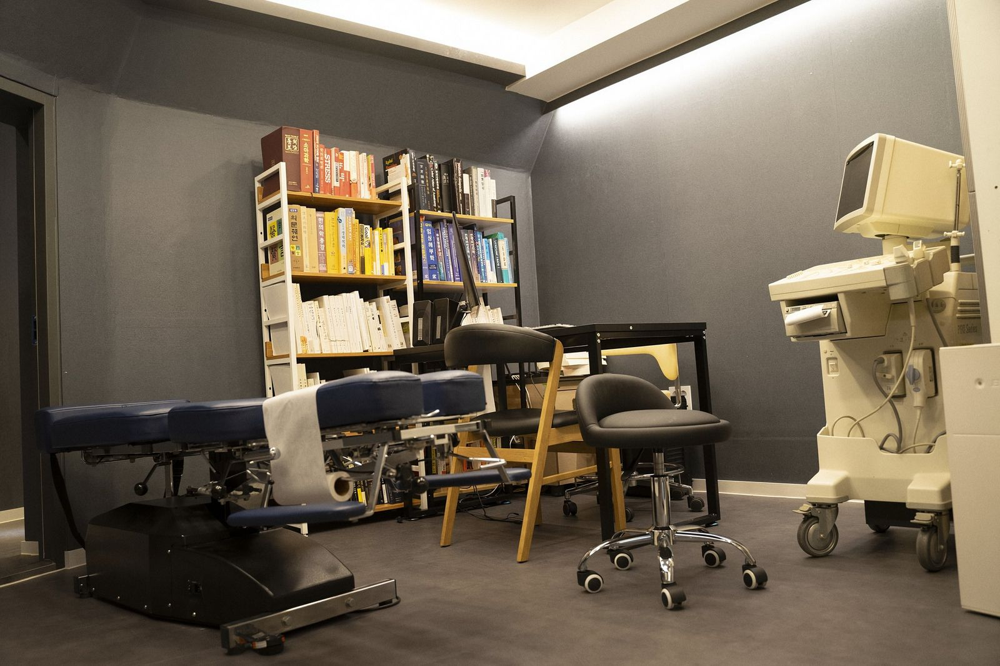
모든 분이 같은 검사나 장비 치료를 받지는 않습니다. 진찰 후 필요하다고 판단될 때만 사용하며, 검사 결과에 따라 다른 의료기관 진료를 안내해 드릴 수 있습니다. 비용과 건강보험 적용 여부는 진찰 후 안내해 드립니다. 사진은 노량진점 치료실의 실제 모습입니다.

지난번 이야기부터 이어서
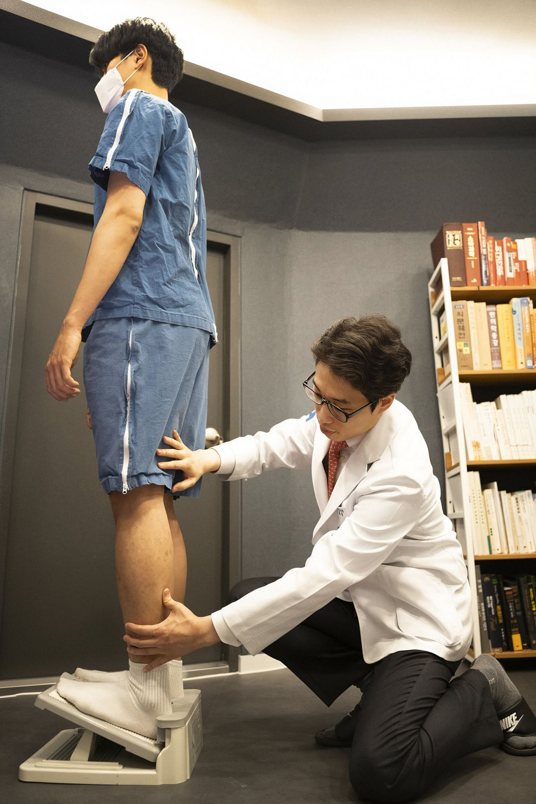
“지난 치료 뒤 일상에서 달라진 점이 하나 있었나요?”
이렇게 편하게 말씀해 주세요.
지난번 이야기는 이어서 여쭙니다. 처음부터 다시 설명하지 않으셔도 됩니다.
오래 다니시는 분의 이야기도 처음처럼 이어서 듣겠습니다.
추나요법은 손으로 척추·관절·근육의 균형을 살피고 맞춰 가는 한의학 수기요법입니다. 통증은 “어디가 아프다”보다 “어떤 동작에서 불편한가”를 먼저 듣는 데서 시작합니다.
추나요법의 적용 대상과 건강보험 적용 여부, 본인부담금은 진찰 후 안내해 드립니다. 개인마다 진료 내용과 기간은 다를 수 있습니다.
회복지도 예시 보기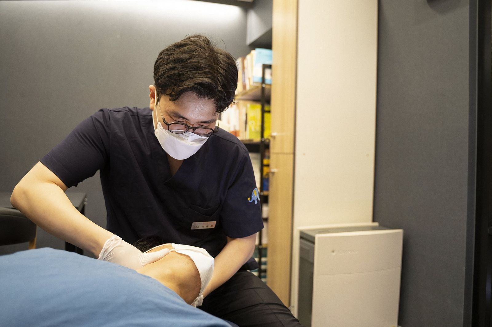
회복은 하루의 리듬에서 시작됩니다
회복은 증상이 사라지는 것만이 아니라, 일상의 리듬이 돌아오는 것입니다.
이름과 연락처가 없는 예시입니다.
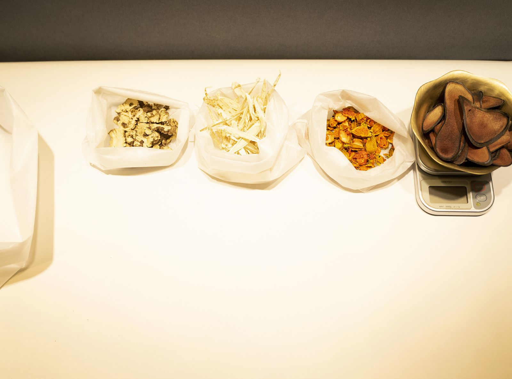
몸 전체를 함께 살핍니다
궁금한 주제를 눌러 자세한 안내를 읽어 보세요.
일상의 말로 쓴 건강 정보입니다. 새 글이 계속 올라옵니다.


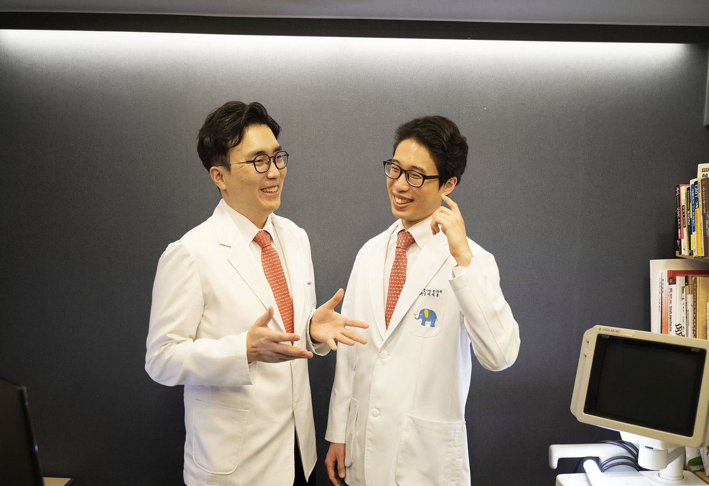
상도동·노량진, 가까운 곳에서
접수, 상담, 진찰, 치료, 귀가 전 안내 순서로 진행합니다. 상담에서 원장이 불편한 점을 충분히 듣고, 필요하다고 판단될 때 필요한 방법으로 진찰합니다.
아니요. 지난번 상담 내용을 이어서 여쭙니다. 지난 치료 뒤 일상에서 달라진 점이 있었는지부터 묻습니다.
몸 밖에서 아픈 부위에 충격파 에너지를 전달하는 방법입니다. 통증 부위를 넓게 살피고 시간과 강도를 조절하며, 필요하다고 판단될 때 침·약침·추나와 이어서 씁니다. 대상, 횟수, 비용은 진찰 후 안내해 드립니다.
손으로 척추·관절·근육의 균형을 살피고 맞춰 가는 한의학 수기요법입니다. 적용 대상과 건강보험 적용 여부, 본인부담금은 진찰 후 안내해 드립니다.
아니요. 진맥, 설진, 초음파 등은 말씀해 주신 증상에 따라 필요하다고 판단될 때만 합니다.
몸은 따뜻한지, 소화는 편한지, 잠은 잘 자는지, 대소변은 어떤지, 통증과 함께 평소 생활을 살핀다는 뜻입니다.
서울 동작구 만양로2길 2 신성빌딩 3층(상도동)에 있습니다. 7호선 상도역 3번 출구에서 오거리까지 직진 약 200m입니다.
공개된 안내 기준으로 평일 09:30~20:00, 토요일·일요일·공휴일 09:30~15:00이며 점심시간은 평일 13:00~14:00입니다. 방문 전 02-815-7510으로 확인해 주세요.
네. 토요일·일요일·공휴일은 09:30~15:00에 진료하며 점심시간 없이 진료합니다. 방문 전 네이버 예약이나 전화로 확인해 주세요.
평일에는 09:30~20:00까지 진료합니다. 점심시간은 13:00~14:00입니다. 퇴근 후 방문하실 분은 네이버 예약을 이용하시면 편합니다.
7호선 상도역 3번 출구에서 약 200m 직진해 오거리에서 상도노빌리티 상가를 오른쪽에 끼고 우회전한 뒤, 약 200m 올라오면 신동아리버파크 후문이 있는 작은 사거리 우측 첫 번째 건물 3층입니다.
1·9호선 노량진역 3번 출구에서 약 100m 직진하면 KEB하나은행 노량진점 앞 마을버스 정류장이 있습니다. 동작 01번 마을버스를 타고 신동아리버파크 정류장에서 내리면 건너편 3층에 한의원이 보입니다. 배차 간격은 평일 약 5분, 주말 약 7분입니다.
건물 옆 뒤쪽 주차 공간 2면과 옆 하늘빛교회(구 노량진감리교회) 지하주차장을 이용하실 수 있습니다.
네이버 예약, 전화(02-815-7510), 카카오톡 채팅 상담으로 문의하실 수 있습니다.

오시는 길을 안내합니다
진료시간은 공개된 안내 기준입니다. 방문 전 전화로 확인해 주세요.
이 페이지의 사진은 진료 공간을 촬영한 실제 사진입니다. 음성 안내는 AI로 만든 음성입니다.